IA 342: Visualization Methods, Technologies, and Tools for Intelligence Analysis
Color Theory
Why Use Color? How Does It Work? When Does It Help—or Get in the Way?
IA 342 — Visualization Methods, Technologies, and Tools for Intelligence Analysis
Xuebin Wei · IA342 · Week 4 · Updated 8 September 2026
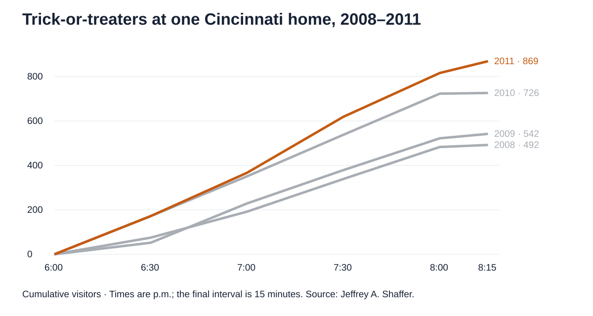
02 — First job: tell the reader where to look
What does the teal color ask you to notice first?
Follow that meaning across the scatterplot, bars and summary numbers.
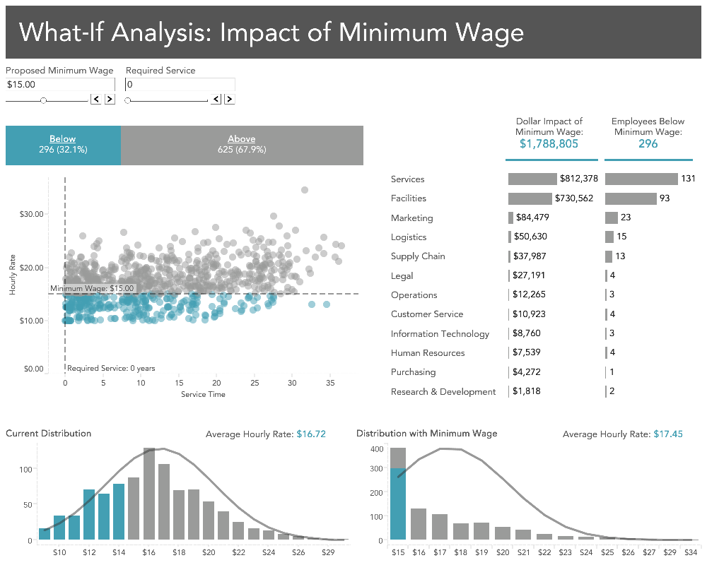
03 — Second job: create an emotional frame
Compare your immediate reaction to the red and blue versions.
What else changes besides color: title, orientation, layout?
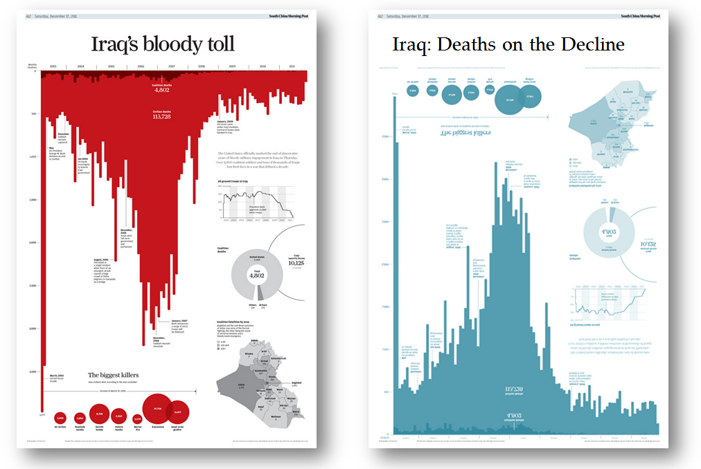
Original: Simon Scarr (2011). Blue redesign: Andy Cotgreave (2014). The redesign also changes the headline and orientation; this is not a color-only experiment.
Source: Original graphic: Simon Scarr (2011), "Iraq's bloody toll," South China Morning Post. Blue redesign: Andy Cotgreave (2014), "Iraq: Deaths on the Decline," reproduced and credited by SAGE, Chapter 18, Figure 18.2.
04 — Color can explain and persuade
A highlight directs attention. A palette can also suggest mood, urgency or identity.
Ask whether that impression fits the evidence and the purpose.
Source: Simon Scarr (2011), "Iraq's bloody toll," South China Morning Post; Andy Cotgreave (2014), "Iraq: Deaths on the Decline," reproduced and credited by SAGE, Chapter 18, Figure 18.2.
05 — Physical properties: light and wavelength
Visible light occupies roughly 380–700 nm of the electromagnetic spectrum.
A screen displays approximations of spectral colors using RGB.
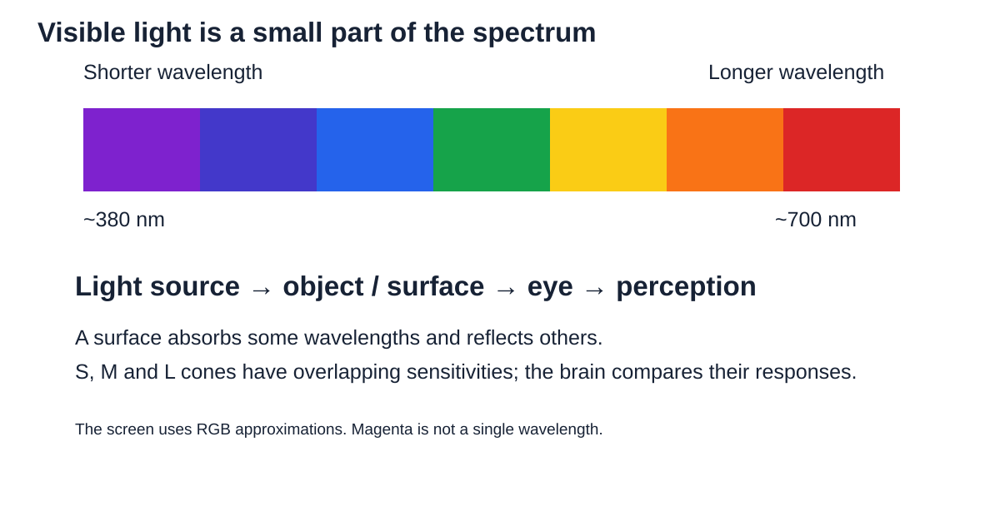
Source: NASA Science, "Visible Light".
06 — Surfaces do not reflect every wavelength equally
Compare the reflectance curves for white, black, red and blue.
The illuminant matters too: a surface cannot reflect light that is not present.
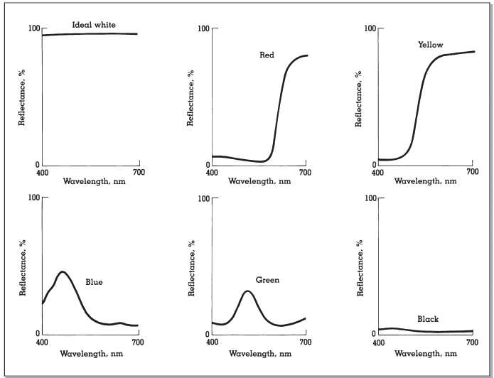
Source: Borden D. Dent, Jeffrey S. Torguson and Thomas W. Hodler (2009), Cartography: Thematic Map Design, 6th ed., McGraw-Hill, "Color and Design of Thematic Maps", subsection "Physical Properties of Color". Physical explanation: NASA Science, "Visible Light".
Short video — Why do we see color?
White light contains many wavelengths. Surfaces absorb some wavelengths and reflect others; the reflected light reaching the eye contributes to the color we perceive.
07 — Three-step takeaway
- White light contains many wavelengths.
- A surface absorbs some wavelengths and reflects others.
- The reflected light reaching the eye contributes to the color we perceive.
Source: NASA Science, "Visible Light"; Borden D. Dent, Jeffrey S. Torguson and Thomas W. Hodler (2009), Cartography: Thematic Map Design, 6th ed., McGraw-Hill, "Color and Design of Thematic Maps".
08 — Additive color: RGB light
Red, green and blue are the screen primaries.
Two primaries form a secondary; all three at full strength give white.
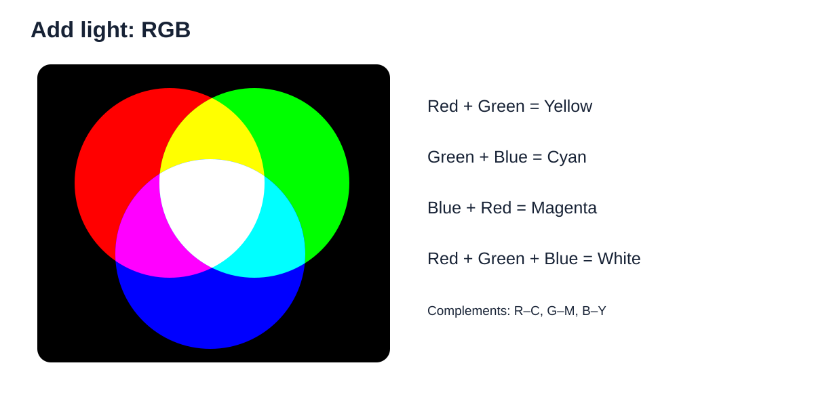
Source: Original RGB illustration; concepts: Borden D. Dent, Jeffrey S. Torguson and Thomas W. Hodler (2009), Cartography: Thematic Map Design, 6th ed., McGraw-Hill, "Color and Design of Thematic Maps", subsection "Color Theories".
Interactive — Additive Color Mixing (RGB)
Adjust the Red, Green, and Blue light channels to observe how additive primaries combine on digital screens.
09 — Subtractive color: CMY filters
Cyan, magenta and yellow remove different parts of white light.
Ideal CMY together gives black; practical CMYK printing adds black ink.
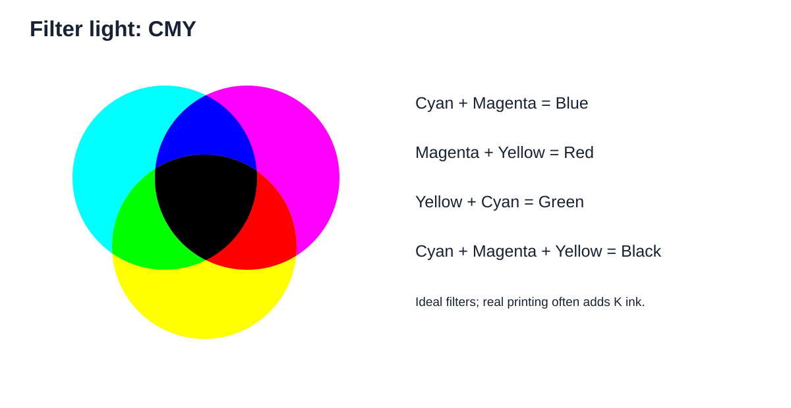
Source: Original ideal-CMY illustration; concepts: Borden D. Dent, Jeffrey S. Torguson and Thomas W. Hodler (2009), Cartography: Thematic Map Design, 6th ed., McGraw-Hill, "Color and Design of Thematic Maps", subsection "Color Theories".
Interactive — Subtractive Color Mixing (CMY)
Switch to CMY mode: observe how physical inks and filters subtract wavelengths from white light.
10 — Primary, secondary, complementary
RGB secondary colors are cyan, magenta and yellow.
Complementary pairs sit opposite on the wheel: red/cyan, green/magenta, blue/yellow.
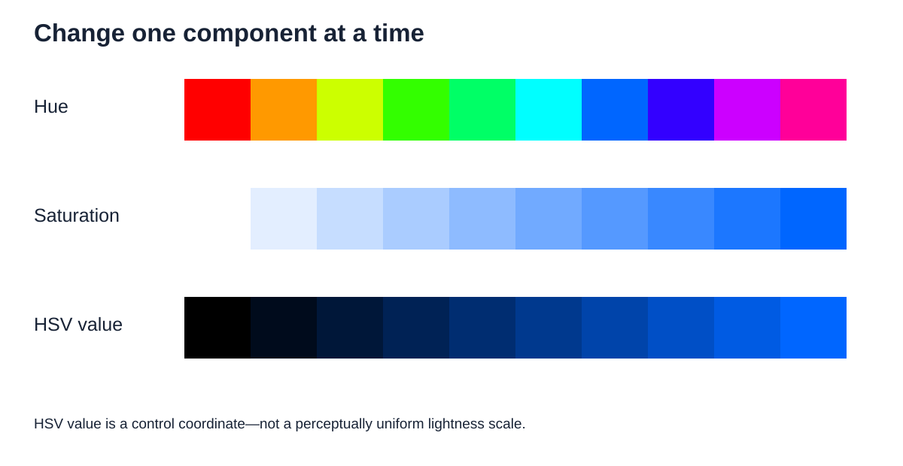
Source: Original color wheel diagram; concepts: Borden D. Dent, Jeffrey S. Torguson and Thomas W. Hodler (2009), Cartography: Thematic Map Design, 6th ed., McGraw-Hill, "Color and Design of Thematic Maps".
11 — Hue, value and saturation
Hue: the color family (wavelength category).
Saturation: intensity or purity — vivid versus neutral gray.
Value: relative lightness or darkness. In data visualization, value carries natural order.
Source: Original HSV demonstration; color-component background: Borden D. Dent, Jeffrey S. Torguson and Thomas W. Hodler (2009), Cartography: Thematic Map Design, 6th ed., McGraw-Hill, "Color and Design of Thematic Maps".
Interactive — Explore Hue, Value, and Saturation
Isolate one dimension at a time: change hue around the color wheel, adjust saturation from gray to vivid, and vary value from dark to light.
12 — Your reaction first. The book's list second.
Look at the color without a verbal label.
Ask the class for two or three immediate associations aloud; then reveal the historical reference table.
Notice cultural agreements, disagreements, and personal associations.
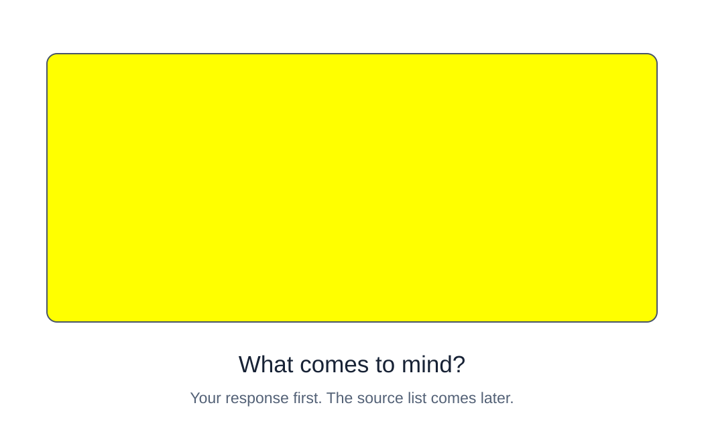
Source: Classroom discussion protocol; associative table: Borden D. Dent, Jeffrey S. Torguson and Thomas W. Hodler (2009), Cartography: Thematic Map Design, 6th ed., McGraw-Hill, "Color and Design of Thematic Maps", Table 14.1.
Interactive — Color Reactions and Emotional Associations
Test your immediate reactions to saturated hues before comparing with historical associative lists.
13 — Subjective reactions to color
One color can carry both positive and negative associations.
Compare your words with the textbook examples—not with a "correct" answer.
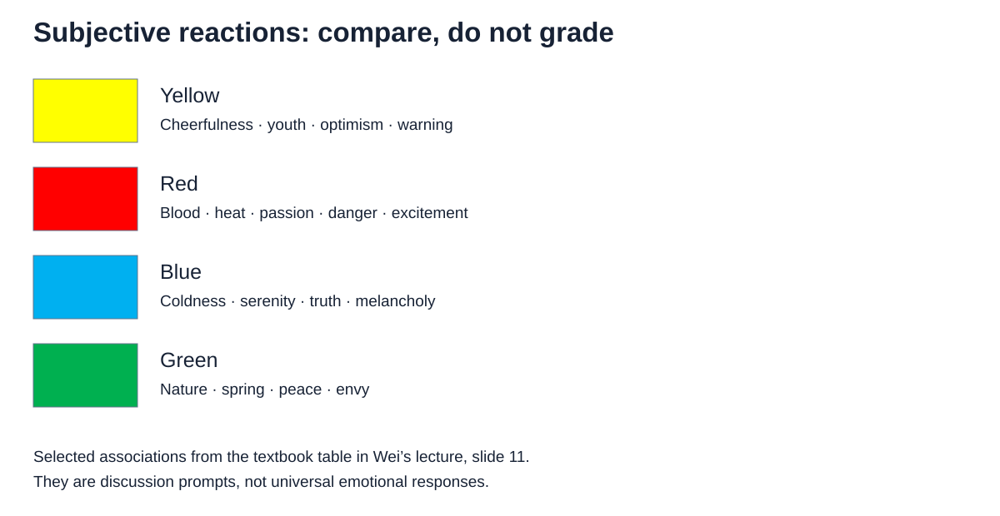
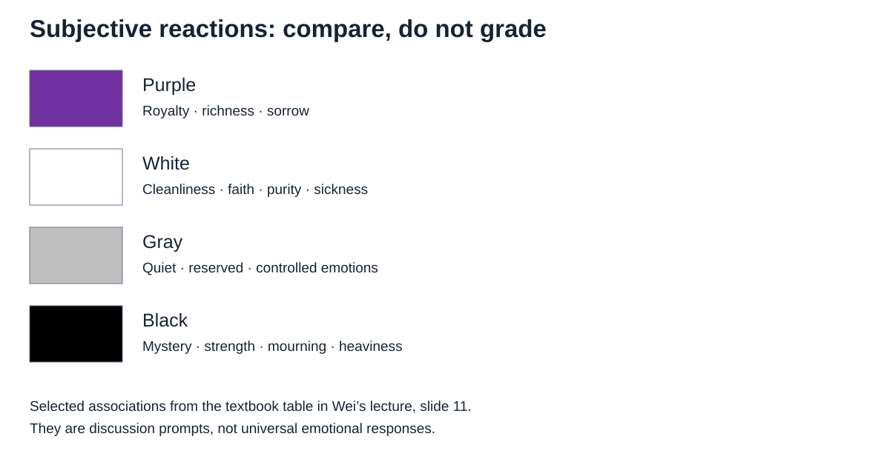
Source: Borden D. Dent, Jeffrey S. Torguson and Thomas W. Hodler (2009), Cartography: Thematic Map Design, 6th ed., McGraw-Hill, "Color and Design of Thematic Maps", subsection "Subjective Reactions to Color".
14 — Color combinations: liking versus reading
Rate "I like it" and "It is easy to read" separately.
Would you still choose a favorite combination for small map labels or multi-series charts?
Source: Historical legibility tables: Sharpe (1974), Hackl (1981); discussion: Borden D. Dent, Jeffrey S. Torguson and Thomas W. Hodler (2009), Cartography: Thematic Map Design, 6th ed., McGraw-Hill.
Interactive — Test Color Combinations and Contrast
Compare subjective aesthetic preference against objective legibility and contrast ratios.
15 — The two historical legibility tables
Compare the orderings: they are not identical.
These rank legibility—not a universal preference for one color pair.
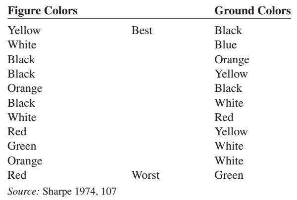
Sharpe (1974) ranking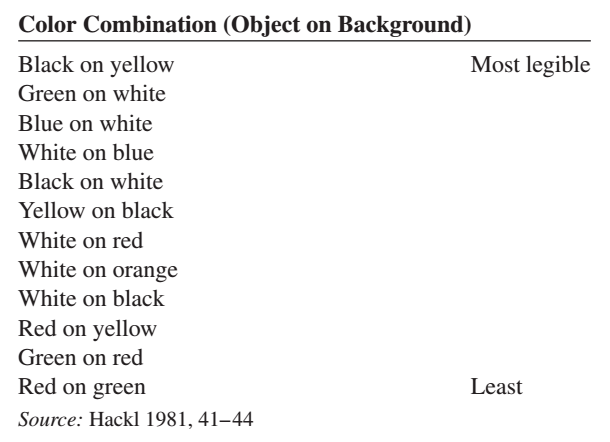
Hackl (1981) rankingSource: Left table: Deborah T. Sharpe (1974), The Psychology of Color and Design, Nelson-Hall, p. 107. Right table: Hackl (1981), pp. 41–44 (attribution printed on the historical table; full author name and work title remain unverified). The printed page attributions are retained; the original page scans/study methods have not been independently checked.
16 — What can we claim from a color preference game?
Our class may disagree about a pair while agreeing that its labels are hard to read.
Keep liking, emotional association and legibility separate.
Source: Original classroom discussion. For text legibility, separately consult W3C, WCAG 2.2, Understanding SC 1.4.3: Contrast (Minimum).
17 — Five uses of color
Match the role to the question before choosing the palette.
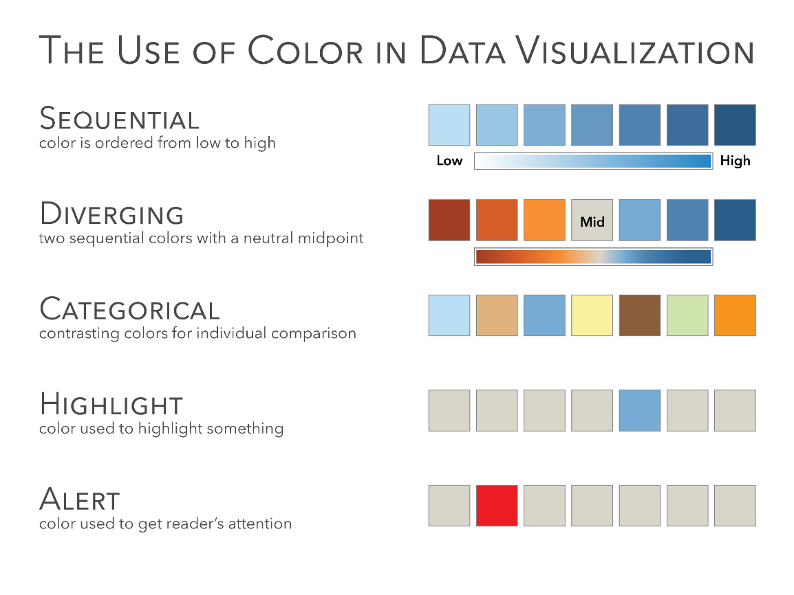
18 — Sequential: ordered values
Read the light-to-dark direction and the legend.
What is encoded here: a state's identity, or its unemployment rate?
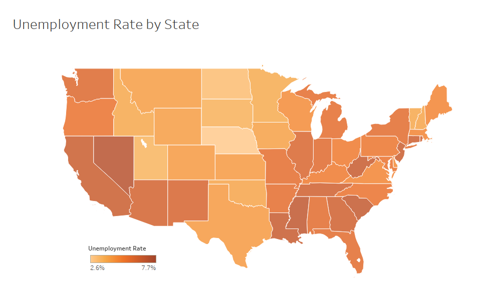
19 — Diverging: two sides of a reference
Find the meaningful midpoint.
Here the two sides distinguish profit from loss.
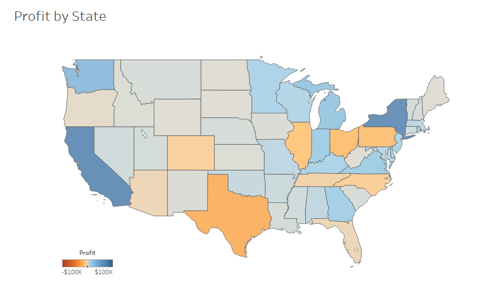
20 — Categorical: different kinds
Furniture, office supplies and technology keep distinct colors.
Distinct hues encode qualitative categories without implying a numeric order.
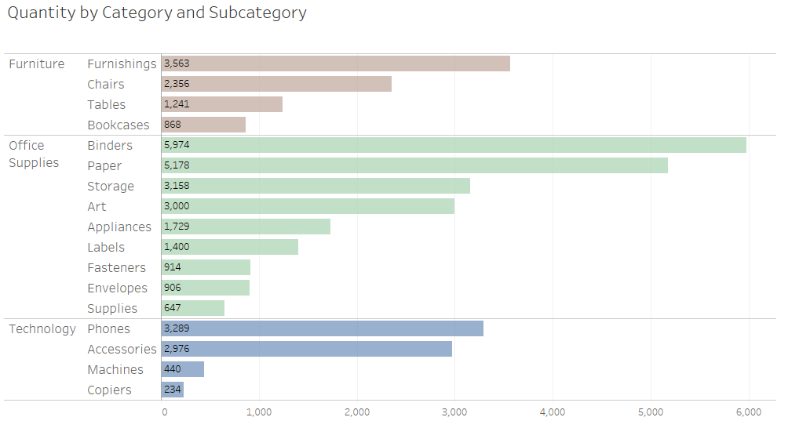
21 — Highlight: one series, the rest as context
Find the highlighted state without searching the legend.
Mute the background series so the story stands out immediately.
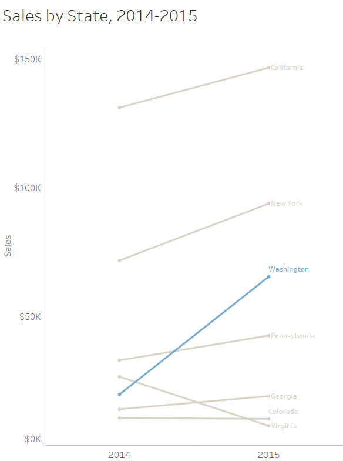
22 — Alert: attach color to a stated condition
Which item draws attention? What explains the alert?
Use alert color sparingly to signal thresholds or exceptions.
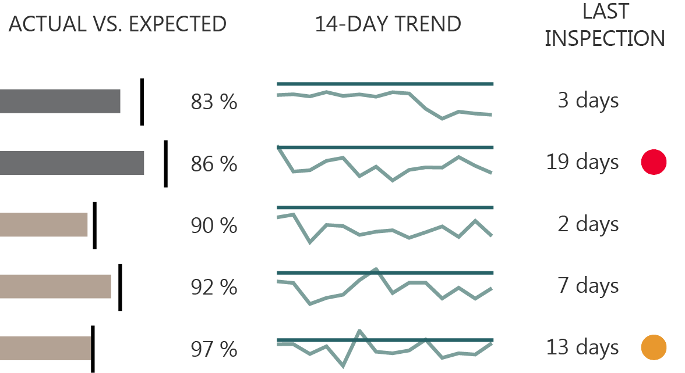
23 — Color vision is not the same for everyone
Compare the original palette with the modeled color-vision conditions.
Do not assume everyone can distinguish the same color pairs.
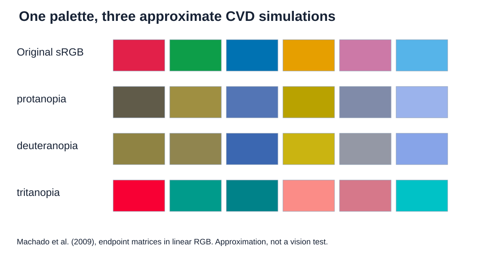
This is an approximate model-based comparison. It is not a diagnostic test or an exact representation of every viewer's experience.
Source: Visual explanation: original classroom simulation based on Gustavo M. Machado, Manuel M. Oliveira and Leandro A. F. Fernandes (2009), "A Physiologically-based Model for Simulation of Color Vision Deficiency," IEEE TVCG 15(6), 1291–1298. Background: National Eye Institute, "Color Blindness".
24 — Cone responses, spectral sensitivity, and why deficiency types differ
Color vision depends on overlapping S, M and L cone responses across the visible spectrum. The cones do not each respond to only one pure color; they respond to overlapping ranges of wavelengths.
That is why a deficiency can happen in more than one way:
- Dichromacy: one cone class is absent.
- Anomalous trichromacy: all three cone classes are present, but one response is altered.
This vocabulary makes the simulations on the next slides meaningful: protan-, deutan-, and tritan-type deficiencies affect different cone-response information.
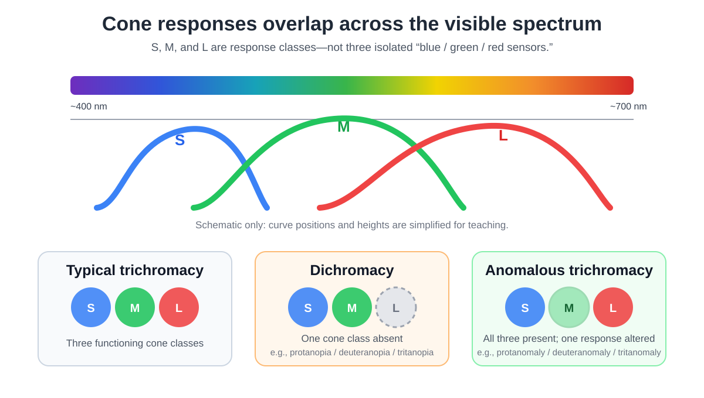
The response curves are a teaching schematic, not measured spectral-sensitivity data. The main point is overlap: color perception is based on comparing cone responses, not on three isolated red/green/blue channels.
Sources: National Eye Institute, "Types of Color Vision Deficiency"; National Eye Institute, "Color Blindness"; Gustavo M. Machado, Manuel M. Oliveira and Leandro A. F. Fernandes (2009), "A Physiologically-based Model for Simulation of Color Vision Deficiency," IEEE TVCG 15(6), 1291–1298. Diagram: original classroom SVG based on these sources.
Short video — Why does color vision deficiency happen?
Normal color vision depends on overlapping S, M and L cone responses. When one response is altered, some colors can become harder to distinguish.
25 — Simulate the same colors and marks
Compare normal vision, protanopia, deuteranopia and tritanopia approximations.
When red and green converge toward identical brownish yellows, hue alone cannot differentiate data categories.
Switch red–green palettes to orange–blue, and reinforce color coding with distinct shapes and direct text labels.
Source: Algorithm: Hans Brettel, Françoise Viénot and John D. Mollon (1997), "Computerized simulation of color appearance for dichromats", Journal of the Optical Society of America A.
Interactive — Color Vision Deficiency (CVD) Simulator
Apply real-time deficiency matrices to maps, palettes, and charts to verify discriminability under protanopia, deuteranopia, and tritanopia.
26 — Original comparison: traffic-light colors
Trace the bars across the original and the simulation.
Which categories become difficult to tell apart?
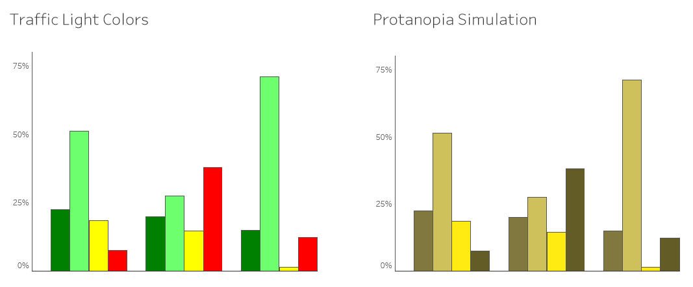
27 — Original repair: blue and orange
Repeat the same comparison with the revised palette.
Keep the numeric and positional cues as well.
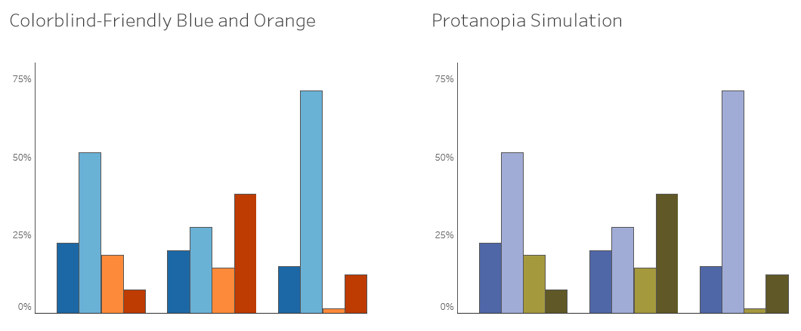
Source: Steve Wexler, Jeffrey Shaffer and Andy Cotgreave (2017), The Big Book of Dashboards, Wiley, Chapter 1, "Data Visualization: A Primer," Figure 1.25; W3C, WCAG 2.2, Understanding SC 1.4.1: Use of Color.
28 — Using color: a practical starting point
- Avoid relying only on red versus green; try orange versus blue.
- Use ramps for ordered magnitude and categorical colors for identities.
- Aim for about five or fewer key categories; add direct labels.
- Keep backgrounds and color meanings consistent.
Source: Steve Wexler, Jeffrey Shaffer and Andy Cotgreave (2017), The Big Book of Dashboards, Wiley, Chapter 1, "Data Visualization: A Primer"; Cynthia A. Brewer, Mark Harrower and The Pennsylvania State University, ColorBrewer 2.0; W3C, WCAG 2.2, Understanding SC 1.4.1: Use of Color.
29 — Too much color: the legend can become the task
When many categories each get a saturated hue, the reader may spend more effort decoding the legend than reading the pattern.
Before adding more colors, ask whether grouping, highlighting, direct labels, or small multiples would reduce the lookup burden.
The next activity turns that idea into a quick classroom test.
Source: design discussion informed by Steve Wexler, Jeffrey Shaffer and Andy Cotgreave (2017), The Big Book of Dashboards, Wiley, Chapter 1, "Data Visualization: A Primer".
30 — Try four categories. Then ten.
Study the legend for five seconds and identify three colors.
Compare accuracy and notice how often you need to glance back at the legend.
Source: Original classroom memory activity; related design discussions: Colin Ware (2012), Information Visualization: Perception for Design, 3rd ed., Morgan Kaufmann.
Interactive — Categorical Color Memory Experiment
Test working memory limits with 4, 7, and 10 categories. Notice when the legend becomes an analytical barrier.
31 — Background is part of the color design
Both center squares have identical RGB values.
Reveal the connection; then match the backgrounds to see how surrounding value alters perceived brightness.
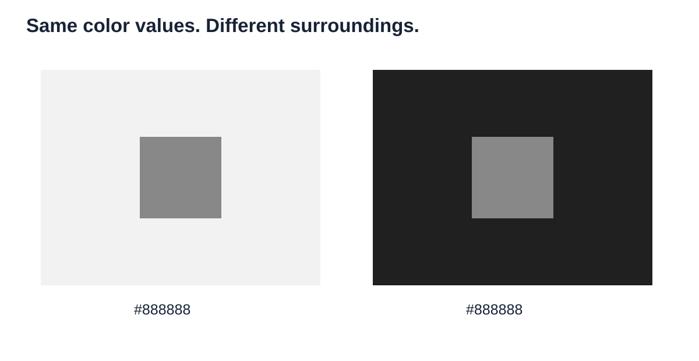
Source: Simultaneous contrast principle: Josef Albers (1963), Interaction of Color, Yale University Press.
Interactive — Background Consistency and Contrast
Experiment with light and dark mode contrasts to see how identical data marks shift in perceived brightness.
32 — A consistent color should mean a consistent thing
Keep a year or category's color stable across charts.
Do not let default palettes silently reassign the meaning.
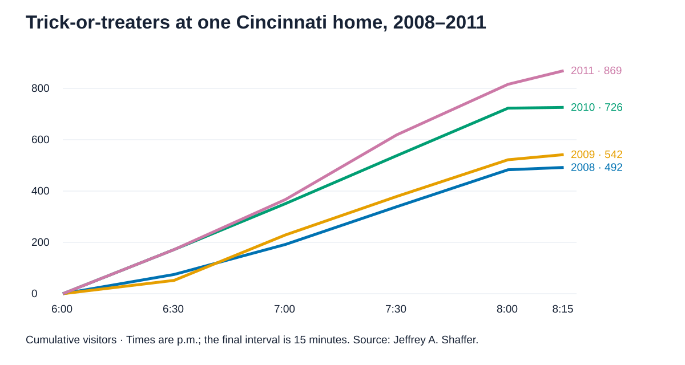
Source: Original comparison graphic; data: Jeffrey A. Shaffer, "Halloween Data Set Published for Data Visualization" (2008–2016 observations). Color-design context: Steve Wexler, Jeffrey Shaffer and Andy Cotgreave (2017), The Big Book of Dashboards, Wiley, Chapter 1, "Data Visualization: A Primer".
33 — Halloween: a small, real dataset
Jeffrey Shaffer has publicly shared a long-running dataset of trick-or-treaters visiting his home in Cincinnati. The historical examples in this lesson use the 2008–2016 period.
A small dataset is useful here because the design choices are easy to see: the same numbers can produce very different visual stories.
Source: Jeffrey A. Shaffer, "Halloween Data Set Published for Data Visualization".
34 — What should color help us see?
Before choosing a palette, choose the question:
- compare years;
- find the busiest time;
- highlight an unusual year;
- separate theme from measurement.
Source: original classroom SVG using data from Jeffrey A. Shaffer's public Halloween dataset.
35 — Public case: seasonal colors with a structured dashboard

Orange and black support the Halloween theme, but the charts still need readable labels, scales, and a consistent visual hierarchy.
Source: Public original image, featured in Jeffrey A. Shaffer (2016), "#HalloweenViz exercise: Viz this data, get Tableau swag," Tableau.
36 — Public case: one palette, several visual tasks

The dashboard uses related orange tones across multiple views.
Source: Yuxiong Guo, "Halloween Distribution Of Candies," public original image.
37 — Public case: one dataset, four views

A palette can link views—but only if the reader can tell what each color means in each panel.
Source: Public original image, featured in Jeffrey A. Shaffer (2016), Tableau.
38 — Public case: Aishwarya Nalluri's Halloween Visitors Analysis

This design combines an orange/black theme with a multicolor small-multiple table.
Source: Aishwarya Nalluri, "Halloween Visitors Analysis," public original image, featured in the Tableau #HalloweenViz gallery article.
39 — Public case: color can represent a condition

Blue is used to distinguish rainy conditions from the neutral gray years.
Source: Public original image, featured in Jeffrey A. Shaffer (2016), Tableau. Weather data source is credited within the original artwork.
40 — Public case: a ghostly visual theme

The pumpkin illustration and handwritten orange headings make the theme memorable, while the chart panels use a more restrained palette.
Source: David Pires (@davidmpires), "trick or treat ghostly analysis" (2016), public original image; data credit in the artwork to @HighVizAbility.
41 — Remove to improve: the original public animation
Watch what disappears. What becomes easier to read after each removal?
Keep useful context; "less" is not a goal by itself.

Source: Joey Cherdarchuk / Darkhorse Analytics (2013), "Data Looks Better Naked"; original public GIF.
42 — Halloween: truth · highlight · simplify
The observations do not change. Only the amount of visual competition changes.
Truth: show the full set. Highlight: direct attention. Simplify: remove what the current question does not need.
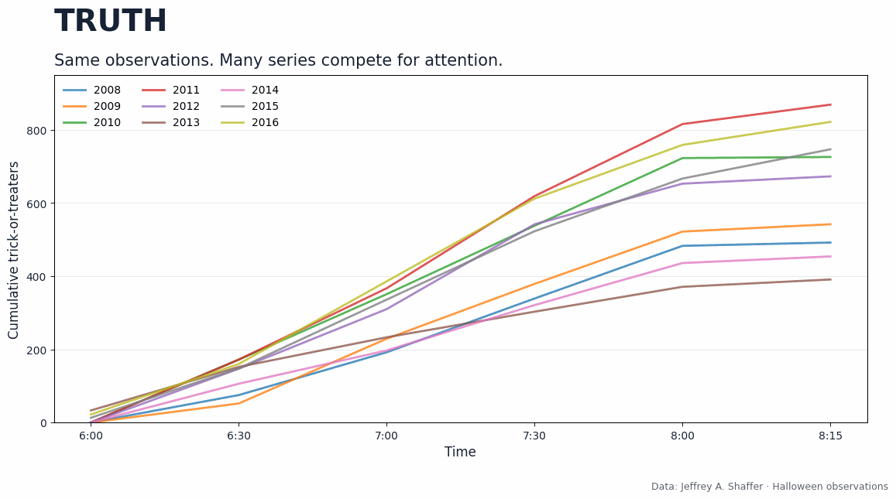
Source: original classroom animation using Jeffrey A. Shaffer's public Halloween dataset. Simplification framing informed by Darkhorse Analytics, "Data Looks Better Naked".
43 — Creativity and clarity are separate questions
Compare three public originals from the Halloween gallery:
Aishwarya Nalluri
David Pires
Ex4: Day, Time & Year
Ask two different questions:
- Which design is most creative or memorable?
- Which design is clearest for answering a data question quickly?
They do not have to be the same answer.
Sources: the three public originals linked above; gallery context: Jeffrey A. Shaffer (2016), Tableau.
44 — Before you keep a color, ask why it is there
Use two public originals as a final checklist:
Before keeping a color, ask:
- Does it encode order, category, selection, magnitude, or a stated condition?
- Is it mainly creating theme or mood? If so, does it interfere with reading?
- Is the color meaning consistent across the visual?
- If color disappeared, could the reader still recover the important information?
- Does the visual imply a stronger story than the evidence actually supports?
Sources: Jeff's Halloween Metrics; How Does Rain Effect Trick or Treating?; W3C WCAG 2.2 — Use of Color.
45 — Exit check
- Explain the different purposes of color in the two opening examples.
- Predict red+green light and cyan+yellow filters.
- Choose a scheme for an ordered rate and for unordered facility types.
- Name one repair that survives a CVD simulation.
Source: Original classroom questions; answers draw on the references accompanying the relevant examples.
46 — Original sources and image credits
- Color and cartographic theory: Borden D. Dent, Jeffrey S. Torguson and Thomas W. Hodler (2009), Cartography: Thematic Map Design, 6th ed., McGraw-Hill; NASA Science; National Eye Institute.
- Dashboard color examples: Steve Wexler, Jeffrey Shaffer and Andy Cotgreave (2017), The Big Book of Dashboards.
- Halloween dataset and public gallery: Jeffrey A. Shaffer, public Halloween dataset; Tableau #HalloweenViz article; public originals used above include Ex1, Ex3, Ex4, Ex5, Ex6, and David Pires's 2016 visualization.
- Animation and accessibility: Darkhorse Analytics, "Data Looks Better Naked"; Machado, Oliveira & Fernandes (2009); W3C WCAG 2.2.
Full source notes are maintained in assets/sources.md.